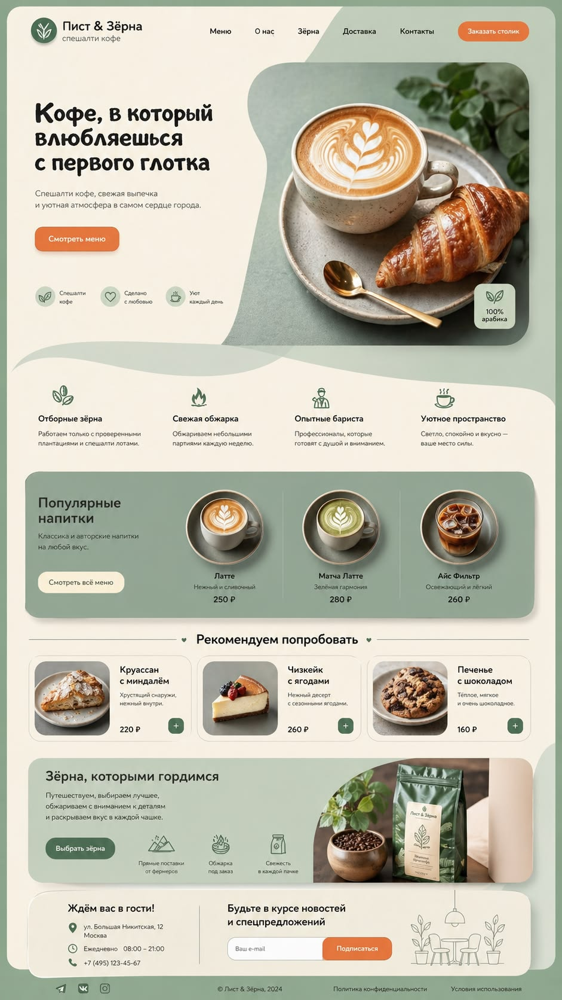

2021
Первый проект
Друг попросил помочь с сайтом для его кофейни — я согласился за символическую сумму, закопался в WordPress и Elementor и за две недели выкатил результат. Кофейня до сих пор на нём работает. Это был момент, когда хобби стало приносить первые деньги — и я уже не мог остановиться.